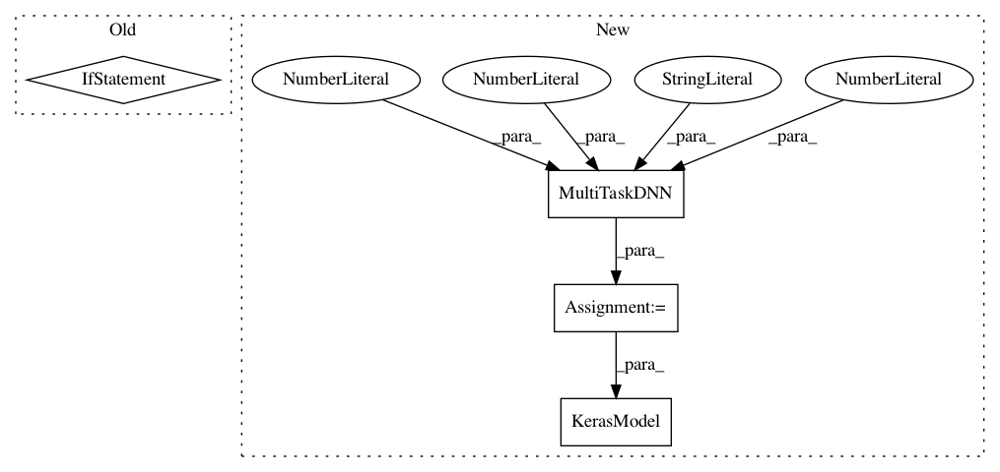

ce4a5ca7cab1ea4ae421fbcd3b28205b1e18158d,deepchem/models/tests/test_overfit.py,TestOverfitAPI,test_keras_regression_overfit,#TestOverfitAPI#,155
Before Change
K.set_session(sess)
with g.as_default():
tasks = ["task0"]
task_types = {task: "regression" for task in tasks}
n_samples = 10
n_features = 3
n_tasks = len(tasks)
After Change
verbosity = "high"
regression_metric = Metric(metrics.r2_score, verbosity=verbosity)
keras_model = MultiTaskDNN(n_tasks, n_features, "regression",
dropout=0., learning_rate=.15, decay=1e-4)
model = KerasModel(keras_model, self.model_dir)
// Fit trained model
model.fit(dataset, nb_epoch=200)
model.save()
In pattern: SUPERPATTERN
Frequency: 3
Non-data size: 4
Instances
Project Name: deepchem/deepchem
Commit Name: ce4a5ca7cab1ea4ae421fbcd3b28205b1e18158d
Time: 2016-09-19
Author: bharath.ramsundar@gmail.com
File Name: deepchem/models/tests/test_overfit.py
Class Name: TestOverfitAPI
Method Name: test_keras_regression_overfit
Project Name: deepchem/deepchem
Commit Name: ce4a5ca7cab1ea4ae421fbcd3b28205b1e18158d
Time: 2016-09-19
Author: bharath.ramsundar@gmail.com
File Name: deepchem/models/tests/test_overfit.py
Class Name: TestOverfitAPI
Method Name: test_keras_classification_overfit
Project Name: deepchem/deepchem
Commit Name: ce4a5ca7cab1ea4ae421fbcd3b28205b1e18158d
Time: 2016-09-19
Author: bharath.ramsundar@gmail.com
File Name: deepchem/models/tests/test_overfit.py
Class Name: TestOverfitAPI
Method Name: test_keras_skewed_classification_overfit